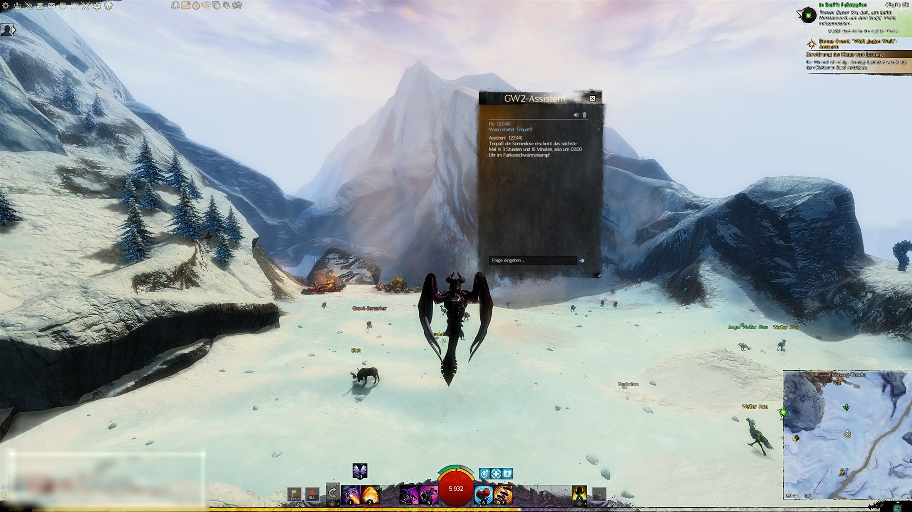
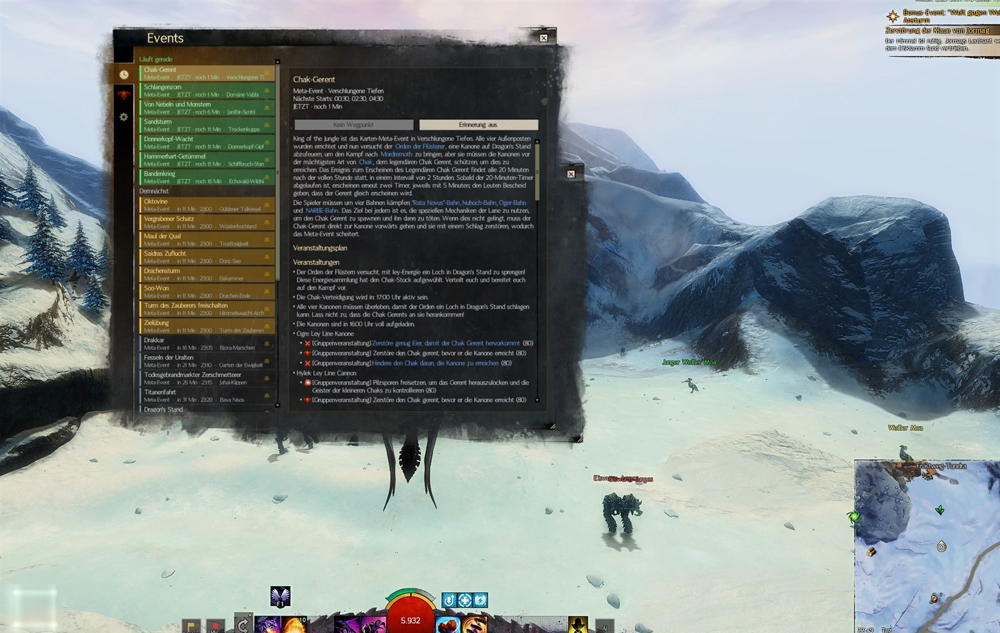
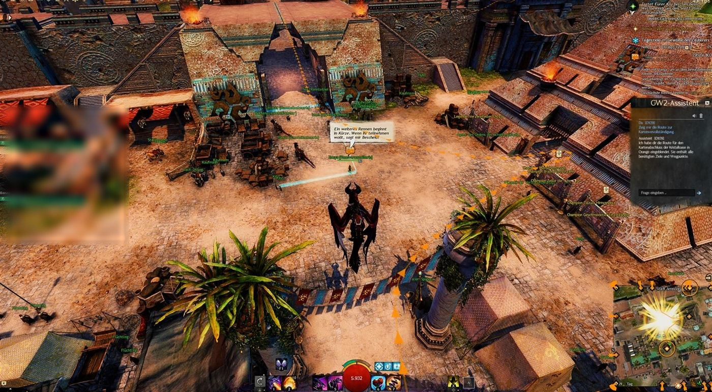
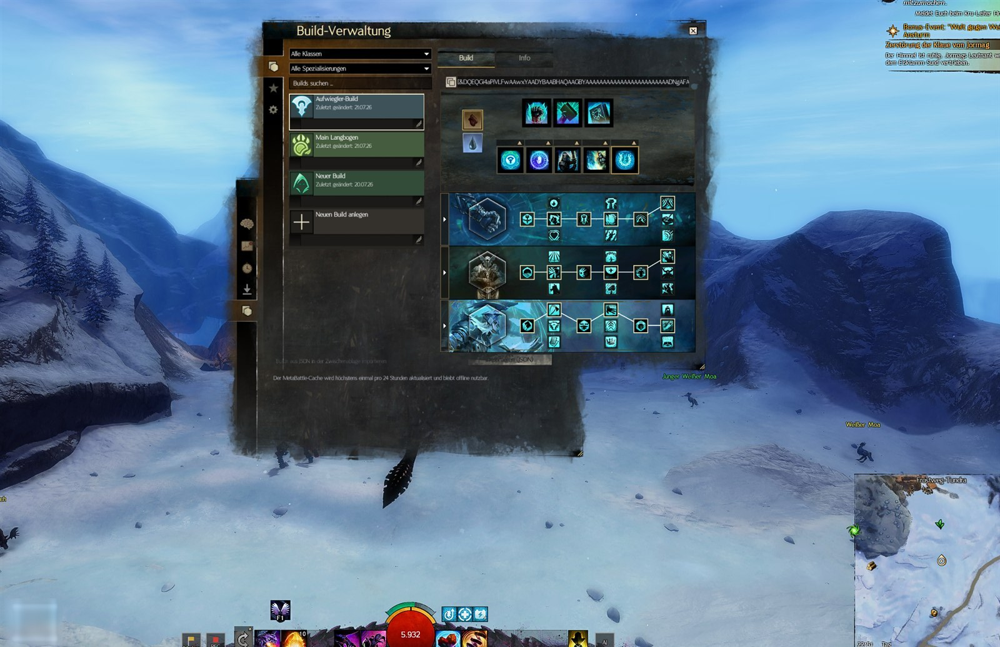
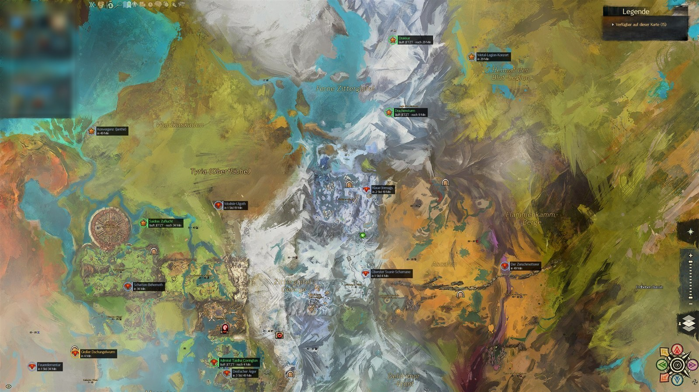
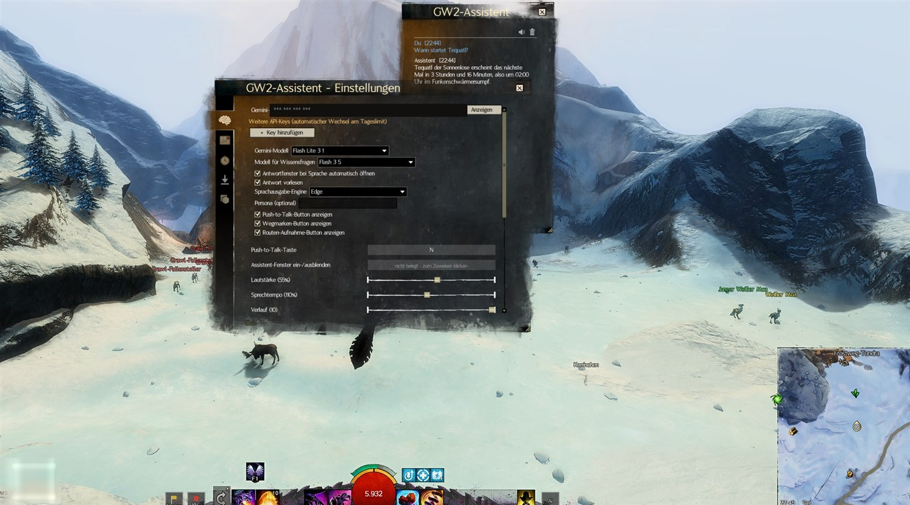
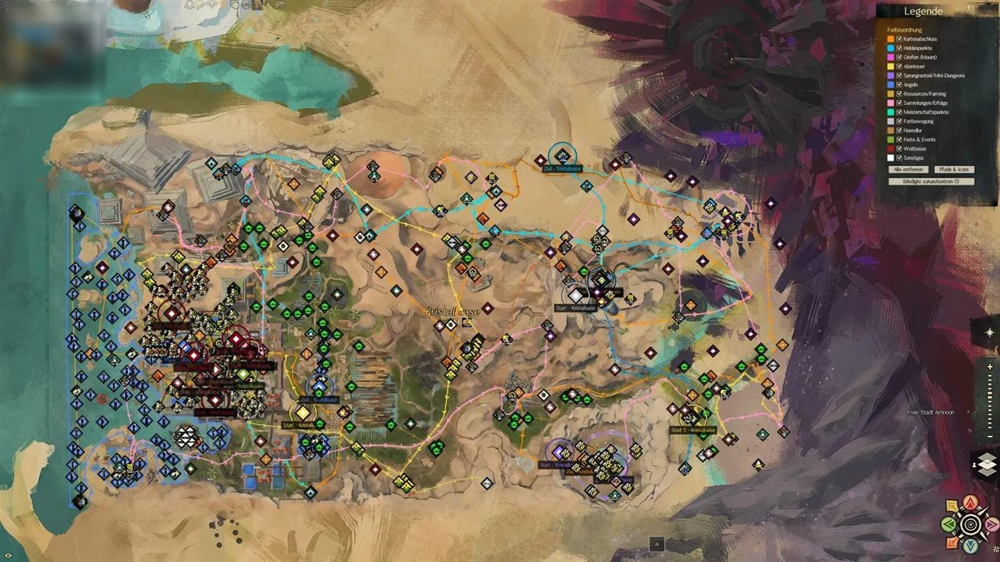
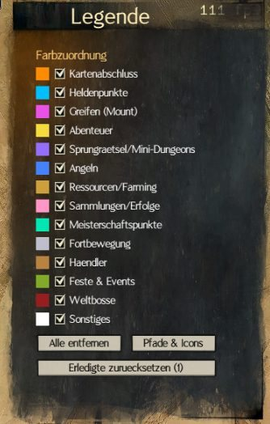
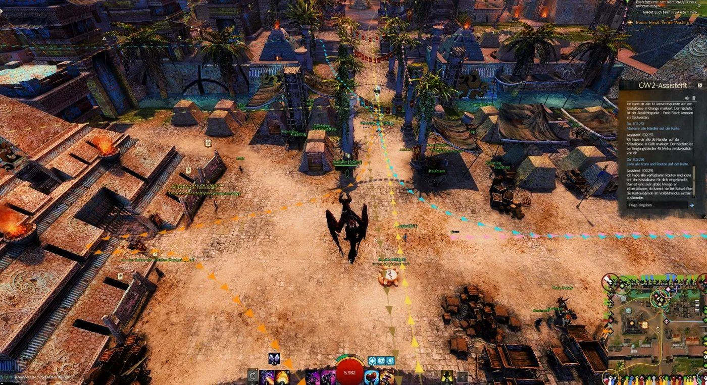

Hold a key, ask your question, let go — the answer appears in the overlay and is read aloud. No alt-tab, no wiki-digging.
What began as a voice assistant is now a full companion: knowledge, event timers, navigation, builds and account analysis — all in one module.

Ask in plain language — the assistant researches live in the GW2 wiki, the official API and on MetaBattle, and answers you directly.
“Where do I find Miyani?”, “What do I need for a Gift of Fortune?”, “What's my most valuable item?” — hold the push-to-talk key, speak, and read the answer in the overlay. Or type quietly into the text box.
A large management window shows what's running now and what's coming up — with countdown, location and a reminder bell per row. The detail panel mirrors the full event wiki page: objectives, rewards and walkthrough.

“Show me the hero-point route”, “Mark all points of interest”, “Show the farming routes” — objectives appear as a glowing 3D trail in the world and on the map, with legend and categories.

Save your builds, browse public MetaBattle builds and apply build codes with a click. Copied codes are detected automatically from your clipboard.

Hit REC, walk the route, save — including waypoints by hotkey. Stays permanently in the “My routes” category.
Download Tekkit and Lady Elyssa packs directly — translated on download. Create and color your own markers.
Wallet, inventory search across bank, material storage and bags, most valuable items — just ask, get an answer.
“Clean up my inventory” — suggestions to sell, store and salvage, including salvage-kit advice.
Push-to-talk key or on-screen button, a text box for quiet questions, a corner icon in the bar — drag buttons anywhere with SHIFT.
Edge voices, free and unlimited, with adjustable rate and volume. Every window is movable and resizable.
Everything happens right in the game — here are a few real views.





Install the module, enter a Gemini key, start asking. That's all it takes.
Install the overlay blishhud.com and start it once. It runs alongside the game.
Copy GW2Assistant.bhm into the addons/blishhud/modules folder and enable it in Blish.
Grab a free one at aistudio.google.com and enter it in the settings.
Hold the push-to-talk key, speak, let go. Optionally add your GW2 API key for account questions.
Recommended model for the highest free limit: gemini-3.1-flash-lite.
The assistant can download marker packs directly and translate them into German on download. The bundled translation is based entirely on the wonderful work of Tekkit's Workshop (All-In-One Marker Pack) and Lady Elyssa (guides plus Achievements & Collections). The translation only changes the German display names — all routes, markers and icons come unchanged from their packs. Thank you!